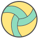
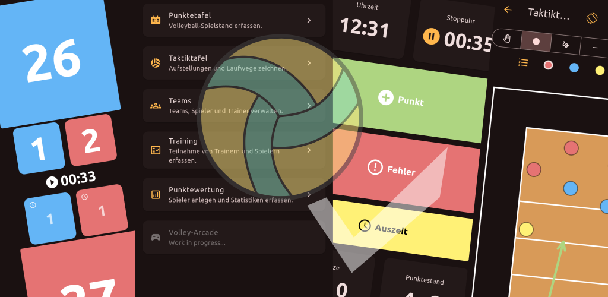

01 / MATCH+
26
123
Punktetafel
Spielstände, Sätze, Auszeiten und Verlauf mit einem Griff erfassen.

VOLLEYACEFor the ones who read the game
VolleyAce bringt Spielstand, Taktik, Teams und Training an einen Ort. Gebaut für die Momente, in denen aus Beobachtung eine Entscheidung wird.

Das Spiel lesen
VolleyAce hält den Rhythmus des Matches fest: Punkte, Fehler, Auszeiten und Satzverlauf. Schnell genug für die Bank, präzise genug für danach.
Mehr als eine Punktetafel
Spielstände, Sätze, Auszeiten und Verlauf mit einem Griff erfassen.
Aufstellungen zeichnen, Laufwege zeigen, mehrere Seiten speichern.
Übungen, Pläne und Teilnahme so organisieren, dass Training fließt.
“
Gute Daten machen
gute Entscheidungen.
Spieler. Trainer. Schiedsrichter.
Eine gemeinsame Sicht aufs Feld.
VolleyAce